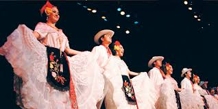
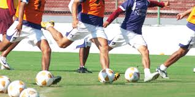
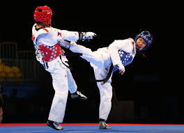

Es una escuela de educación media superior " Centro de Bachillerato Tecnológico Industrial y de Servicios No. 16" que se encuentra localizada en "Fracc. Ricardo Flores Magón Domicilio Conocido S/N. Atlixco, Puebla. CP 74240". Dicha institución permanece a "DGETI" y normalmente coincide con el calendario escolar que ha diseñado la "SEP".
A continuación se mostrarán algunos actos relevantes que se han realizado o se realizarán en la institución a corto plazo así como también se le informará sobre requisitos y cuotas que deberá cubrir si es que quiere informarse para futuras inscripciones.
*Constancia de estudios de 3er año de secundaria como alumno regular
*Copia de acta de nacimiento
*Copia del curp (ampliación a tamaño carta
*Dos fotografías tamaño infantil
*Copia del IFE del padre o tutor
*Cuota solicitada por la institución
*Llenar solicitud de inscripción
*Firmar carta compromiso
*Certificado de secundaria, original y 2 copias
*Comprobante domiciliariol
*Certificado médico
*6 fotos tamaño infantil(blanco y negro)
Da clic para ir a una página de "CBTIS 16" y conocer información sobre la institución.
Los lugares en los que los alumnos pueden convivir sin importar la especialidad que tengan:
*Aulas
*Laboratorio de química
*Laboratorio de física
*Laboratorio de inglés
*Biblioteca escolar
*Patio
*Oficinas administrativas
*Campo de fútbol
*Cancha de basquetbol
*Plaza cívica
Los lugares en los que los alumnos pueden convivir con respecto a sus especialidades:
*Laboratorio de programación (1, 2, 3 y 4)
*Laboratorio de logística
*Laboratorio de automatización
El día Lunes 30 de Mayo se realizó una presentación de proyectos escolares realizados por los estudiantes de la institución según sus especialidades en todo el espacio disponible de la plaza cívica. A continuación se mostrarán imágenes de dichas exposiciones.
Así, cuando existe una fecha que el municipio de Atlixco quiere destacar, la escuela es partícipe de dicha celebración juntando a la escuela por grupos de las cosas a las que suelen hacer dentro de la escuela, tales como: bastoneras, letras, y un grupo de personas que mueven banderines, así mismo participan en orden con arduo trabajo sin olvidar sus ensayos fuera de los horarios de clases.



Es bien sabido que es una institución con un enfoque hacia una carrera técnica e incluso, saliendo del CBTis, tienes ya un título como técnico profesional, pero, en qué clase de especialidad puedes entrar una ves inscrito?.
Pues bien, ésta escuela te ofrece las siguientes especialidades y puedes elegir la que más te plazca.
Su objetivo es:
Desarrollar profesionales técnicos en programación que articulen saberes de diversos campos y realizar actividades dirigidas a la instalación y desarrollo de software usando programación estructurada y orientada a objetos en ambientes web y móviles, con almacenamiento persistente de datos
Su objetivo es:
Ofrecer competencias profesionales que te permitirán realizar actividades dirigidas a la administración de bienes planificando suministros destinados al almacenamiento de manera manual y electrónica así como proveer los servicios y atención al cliente sobre los movimientos y costos de la cadena logística
Su objetivo es:
Desarrollar oreforzar los siguientes conocimientos:
*Desarrollar instalaciones eléctricas residenciales y comerciales
*Mantener los motores y generadores de CA y CC
*Mantiene en operación los circuitos de control electromagnético y electrónico
*Mantener sistemas de iluminación y energía renovable, eléctricas de medida y baja tensión
Su objetivo es:
Volver al alumno más competente, creatividad y compañerismo ya que la mayoría de los proyectos se toma en cuenta eso. Adquirirá formación personal con las aptitudes y habilidades que tendrá que demostrar en actividades como las siguientes:
*Soldar y ajustar piezas mecánicas
*Maquina piezas mecánicas en taladro y torno, en fresadora, rectificadora y cepillo y por CNC controladas
*Mantiene sistemas de transmición de potencia